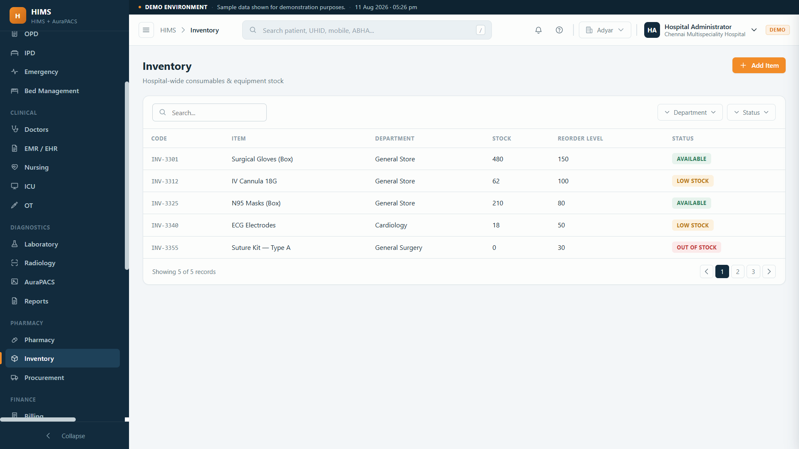

Central stores, consumables and surgical items by batch and expiry, ward indents, goods receipt, reorder alerts and asset tracking. Consumption ties to the patient bill, so what is used is what is charged.

When stores run on a register, wards over-order, expensive surgical items expire, consumption is not charged to the patient, and no one can say what is actually on the shelf.
Items issued but never charged to a patient.
Costly surgical stock lapsing unused.
Wards drawing stock with no indent trail.
Ward requests.
GRN with batch.
To department.
To the patient bill.
Alerts at min level.
Every issue traced to a ward and a patient.
Central stores control.
Indents and GRN.
Request and receive.
Consumption charged.
Asset and AMC log.
Spend visibility.
We built stock, dispatch and delivery tracking for a medical-equipment distributor, so hospital stores are proven ground.
We work with a medical robotics firm, so equipment and asset tracking is familiar to us.
Founder-led delivery, so you talk to the builder.
Central stores, consumables, surgical items and assets, tracked by batch and expiry, with ward indents, goods receipt, reorder alerts and issue to departments.
Yes. Wards and departments raise indents that stores fulfil, so consumption is tracked to the department instead of vanishing.
Yes. Consumables and surgical items are tracked by batch and expiry with alerts, so expensive items are used before they lapse.
Yes. Items issued against a patient can post to that patient's bill, so consumables charged are consumables billed.
Yes. Equipment is tracked as assets with location and service history. It is part of the full hospital system.
Tell us how stores and consumables move today. We will put indents, expiry, reorder and billing on one system so nothing leaks.
Indents & GRN · Expiry alerts · Consumption billing